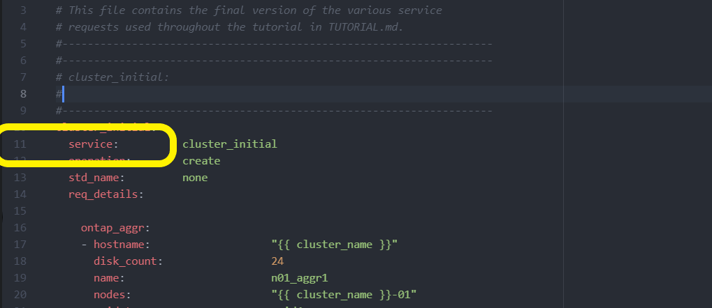
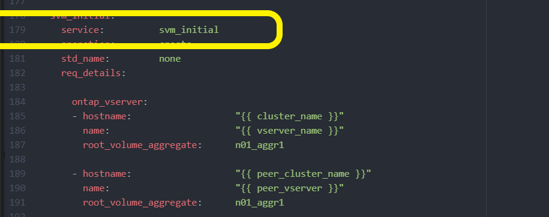

BlueXP automation catalog
BlueXP automation catalog
Deploy the ONTAP cluster using the solution
 Suggest changes
Suggest changes
After completing the preparation and planning, you are ready to use the ONTAP day 0/1 solution to quickly configure an ONTAP cluster using Ansible.
At any time during the steps in this section, you can choose to test a request instead of actually executing it. To test a request, change the site.yml playbook on the command line to logic.yml.

|
The docs/tutorial-requests.txt location contains the final version of all service requests used throughout this procedure. If you have difficulty running a service request, you can copy the relevant request from the tutorial-requests.txt file to the playbooks/inventory/group_vars/all/tutorial-requests.yml location and modify the hard-coded values as required (IP address, aggregate names and so on). You should then be able to successfully run the request.
|
Before you begin
-
You must have Ansible installed.
-
You must have downloaded the ONTAP day 0/1 solution and extracted the folder to the desired location on the Ansible control node.
-
The ONTAP system state must meet the requirements and you must have the necessary credentials.
-
You must have completed all required tasks outlined in the Prepare section.
|
|
The examples throughout this solution use "Cluster_01" and "Cluster_02" as the names for the two clusters. You must replace these values with the names of the clusters in your environment. |
Step 1: Initial cluster configuration
At this stage, you must perform some initial cluster configuration steps.
-
Navigate to the
playbooks/inventory/group_vars/all/tutorial-requests.ymllocation and review thecluster_initialrequest in the file. Make any necessary changes for your environment. -
Create a file in the
logic-tasksfolder for the service request. For example, create a file calledcluster_initial.yml.Copy the following lines to the new file:
- name: Validate required inputs ansible.builtin.assert: that: - service is defined - name: Include data files ansible.builtin.include_vars: file: "{{ data_file_name }}.yml" loop: - common-site-stds - user-inputs - cluster-platform-stds - vserver-common-stds loop_control: loop_var: data_file_name - name: Initial cluster configuration set_fact: raw_service_request: -
Define the
raw_service_requestvariable.You can use one of the following options to define the
raw_service_requestvariable in thecluster_initial.ymlfile you created in thelogic-tasksfolder:-
Option 1: Manually define the
raw_service_requestvariable.Open the
tutorial-requests.ymlfile using an editor and copy the content from line 11 to line 165. Paste the content under theraw service requestvariable in the newcluster_initial.ymlfile, as shown in the following examples:
Show example
Example
cluster_initial.ymlfile:- name: Validate required inputs ansible.builtin.assert: that: - service is defined - name: Include data files ansible.builtin.include_vars: file: "{{ data_file_name }}.yml" loop: - common-site-stds - user-inputs - cluster-platform-stds - vserver-common-stds loop_control: loop_var: data_file_name - name: Initial cluster configuration set_fact: raw_service_request: service: cluster_initial operation: create std_name: none req_details: ontap_aggr: - hostname: "{{ cluster_name }}" disk_count: 24 name: n01_aggr1 nodes: "{{ cluster_name }}-01" raid_type: raid4 - hostname: "{{ peer_cluster_name }}" disk_count: 24 name: n01_aggr1 nodes: "{{ peer_cluster_name }}-01" raid_type: raid4 ontap_license: - hostname: "{{ cluster_name }}" license_codes: - XXXXXXXXXXXXXXAAAAAAAAAAAAAA - XXXXXXXXXXXXXXAAAAAAAAAAAAAA - XXXXXXXXXXXXXXAAAAAAAAAAAAAA - XXXXXXXXXXXXXXAAAAAAAAAAAAAA - XXXXXXXXXXXXXXAAAAAAAAAAAAAA - XXXXXXXXXXXXXXAAAAAAAAAAAAAA - XXXXXXXXXXXXXXAAAAAAAAAAAAAA - XXXXXXXXXXXXXXAAAAAAAAAAAAAA - XXXXXXXXXXXXXXAAAAAAAAAAAAAA - XXXXXXXXXXXXXXAAAAAAAAAAAAAA - XXXXXXXXXXXXXXAAAAAAAAAAAAAA - XXXXXXXXXXXXXXAAAAAAAAAAAAAA - XXXXXXXXXXXXXXAAAAAAAAAAAAAA - XXXXXXXXXXXXXXAAAAAAAAAAAAAA - XXXXXXXXXXXXXXAAAAAAAAAAAAAA - XXXXXXXXXXXXXXAAAAAAAAAAAAAA - XXXXXXXXXXXXXXAAAAAAAAAAAAAA - XXXXXXXXXXXXXXAAAAAAAAAAAAAA - XXXXXXXXXXXXXXAAAAAAAAAAAAAA - XXXXXXXXXXXXXXAAAAAAAAAAAAAA - XXXXXXXXXXXXXXAAAAAAAAAAAAAA - XXXXXXXXXXXXXXAAAAAAAAAAAAAA - XXXXXXXXXXXXXXAAAAAAAAAAAAAA - XXXXXXXXXXXXXXAAAAAAAAAAAAAA - XXXXXXXXXXXXXXAAAAAAAAAAAAAA - XXXXXXXXXXXXXXAAAAAAAAAAAAAA - XXXXXXXXXXXXXXAAAAAAAAAAAAAA - XXXXXXXXXXXXXXAAAAAAAAAAAAAA - XXXXXXXXXXXXXXAAAAAAAAAAAAAA - XXXXXXXXXXXXXXAAAAAAAAAAAAAA - XXXXXXXXXXXXXXAAAAAAAAAAAAAA - hostname: "{{ peer_cluster_name }}" license_codes: - XXXXXXXXXXXXXXAAAAAAAAAAAAAA - XXXXXXXXXXXXXXAAAAAAAAAAAAAA - XXXXXXXXXXXXXXAAAAAAAAAAAAAA - XXXXXXXXXXXXXXAAAAAAAAAAAAAA - XXXXXXXXXXXXXXAAAAAAAAAAAAAA - XXXXXXXXXXXXXXAAAAAAAAAAAAAA - XXXXXXXXXXXXXXAAAAAAAAAAAAAA - XXXXXXXXXXXXXXAAAAAAAAAAAAAA - XXXXXXXXXXXXXXAAAAAAAAAAAAAA - XXXXXXXXXXXXXXAAAAAAAAAAAAAA - XXXXXXXXXXXXXXAAAAAAAAAAAAAA - XXXXXXXXXXXXXXAAAAAAAAAAAAAA - XXXXXXXXXXXXXXAAAAAAAAAAAAAA - XXXXXXXXXXXXXXAAAAAAAAAAAAAA - XXXXXXXXXXXXXXAAAAAAAAAAAAAA - XXXXXXXXXXXXXXAAAAAAAAAAAAAA - XXXXXXXXXXXXXXAAAAAAAAAAAAAA - XXXXXXXXXXXXXXAAAAAAAAAAAAAA - XXXXXXXXXXXXXXAAAAAAAAAAAAAA - XXXXXXXXXXXXXXAAAAAAAAAAAAAA - XXXXXXXXXXXXXXAAAAAAAAAAAAAA - XXXXXXXXXXXXXXAAAAAAAAAAAAAA - XXXXXXXXXXXXXXAAAAAAAAAAAAAA - XXXXXXXXXXXXXXAAAAAAAAAAAAAA - XXXXXXXXXXXXXXAAAAAAAAAAAAAA - XXXXXXXXXXXXXXAAAAAAAAAAAAAA - XXXXXXXXXXXXXXAAAAAAAAAAAAAA - XXXXXXXXXXXXXXAAAAAAAAAAAAAA - XXXXXXXXXXXXXXAAAAAAAAAAAAAA - XXXXXXXXXXXXXXAAAAAAAAAAAAAA ontap_motd: - hostname: "{{ cluster_name }}" vserver: "{{ cluster_name }}" message: "New MOTD" - hostname: "{{ peer_cluster_name }}" vserver: "{{ peer_cluster_name }}" message: "New MOTD" ontap_interface: - hostname: "{{ cluster_name }}" vserver: "{{ cluster_name }}" interface_name: ic01 role: intercluster address: 10.0.0.101 netmask: 255.255.255.0 home_node: "{{ cluster_name }}-01" home_port: e0c ipspace: Default use_rest: never - hostname: "{{ cluster_name }}" vserver: "{{ cluster_name }}" interface_name: ic02 role: intercluster address: 10.0.0.101 netmask: 255.255.255.0 home_node: "{{ cluster_name }}-01" home_port: e0c ipspace: Default use_rest: never - hostname: "{{ peer_cluster_name }}" vserver: "{{ peer_cluster_name }}" interface_name: ic01 role: intercluster address: 10.0.0.101 netmask: 255.255.255.0 home_node: "{{ peer_cluster_name }}-01" home_port: e0c ipspace: Default use_rest: never - hostname: "{{ peer_cluster_name }}" vserver: "{{ peer_cluster_name }}" interface_name: ic02 role: intercluster address: 10.0.0.101 netmask: 255.255.255.0 home_node: "{{ peer_cluster_name }}-01" home_port: e0c ipspace: Default use_rest: never ontap_cluster_peer: - hostname: "{{ cluster_name }}" dest_cluster_name: "{{ peer_cluster_name }}" dest_intercluster_lifs: "{{ peer_lifs }}" source_cluster_name: "{{ cluster_name }}" source_intercluster_lifs: "{{ cluster_lifs }}" peer_options: hostname: "{{ peer_cluster_name }}" -
Option 2: Use a Jinja template to define the request:
You can also use the following Jinja template format to get the
raw_service_requestvalue.raw_service_request: "{{ cluster_initial }}"
-
-
Perform the initial cluster configuration for the first cluster:
ansible-playbook -i inventory/hosts site.yml -e cluster_name=<Cluster_01>Verify that there are no errors before proceeding.
-
Repeat the command for the second cluster:
ansible-playbook -i inventory/hosts site.yml -e cluster_name=<Cluster_02>Verify that there are no errors for the second cluster.
When you scroll up towards the beginning of the Ansible output you should see the request that was sent to the framework, as shown in the following example:
Show example
TASK [Show the raw_service_request] ************************************************************************************************************ ok: [localhost] => { "raw_service_request": { "operation": "create", "req_details": { "ontap_aggr": [ { "disk_count": 24, "hostname": "Cluster_01", "name": "n01_aggr1", "nodes": "Cluster_01-01", "raid_type": "raid4" } ], "ontap_license": [ { "hostname": "Cluster_01", "license_codes": [ "XXXXXXXXXXXXXXXAAAAAAAAAAAA", "XXXXXXXXXXXXXXAAAAAAAAAAAAA", "XXXXXXXXXXXXXXAAAAAAAAAAAAA", "XXXXXXXXXXXXXXAAAAAAAAAAAAA", "XXXXXXXXXXXXXXAAAAAAAAAAAAA", "XXXXXXXXXXXXXXAAAAAAAAAAAAA", "XXXXXXXXXXXXXXAAAAAAAAAAAAA", "XXXXXXXXXXXXXXAAAAAAAAAAAAA", "XXXXXXXXXXXXXXAAAAAAAAAAAAA", "XXXXXXXXXXXXXXAAAAAAAAAAAAA", "XXXXXXXXXXXXXXAAAAAAAAAAAAA", "XXXXXXXXXXXXXXAAAAAAAAAAAAA", "XXXXXXXXXXXXXXAAAAAAAAAAAAA", "XXXXXXXXXXXXXXAAAAAAAAAAAAA", "XXXXXXXXXXXXXXAAAAAAAAAAAAA", "XXXXXXXXXXXXXXAAAAAAAAAAAAA", "XXXXXXXXXXXXXXAAAAAAAAAAAAA", "XXXXXXXXXXXXXXAAAAAAAAAAAAA", "XXXXXXXXXXXXXXAAAAAAAAAAAAA", "XXXXXXXXXXXXXXAAAAAAAAAAAAA", "XXXXXXXXXXXXXXAAAAAAAAAAAAA", "XXXXXXXXXXXXXXAAAAAAAAAAAAA", "XXXXXXXXXXXXXXAAAAAAAAAAAAA", "XXXXXXXXXXXXXXAAAAAAAAAAAAA", "XXXXXXXXXXXXXXAAAAAAAAAAAAA", "XXXXXXXXXXXXXXAAAAAAAAAAAAA", "XXXXXXXXXXXXXXAAAAAAAAAAAAA", "XXXXXXXXXXXXXXAAAAAAAAAAAAA", "XXXXXXXXXXXXXXAAAAAAAAAAAAA", "XXXXXXXXXXXXXXAAAAAAAAAAAAA", "XXXXXXXXXXXXXXAAAAAAAAAAAAA", "XXXXXXXXXXXXXXAAAAAAAAAAAAA", "XXXXXXXXXXXXXXAAAAAAAAAAAAA", "XXXXXXXXXXXXXXAAAAAAAAAAAAA" ] } ], "ontap_motd": [ { "hostname": "Cluster_01", "message": "New MOTD", "vserver": "Cluster_01" } ] }, "service": "cluster_initial", "std_name": "none" } } -
Log in to each ONTAP instance and verify that the request was successful.
Step 2: Configure the intercluster LIFs
You can now configure the intercluster LIFs by adding the LIF definitions to the cluster_initial request and defining the ontap_interface microservice.
The service definition and the request work together to determine the action:
-
If you provide a service request for a microservice that is not in the service definitions, the request is not executed.
-
If you provide a service request with one or more microservices defined in the service definitions, but omitted from the request, the request is not executed.
The execution.yml playbook evaluates the service definition by scanning the list of microservices in the order listed:
-
If there is an entry in the request with a dictionary key matching the
argsentry contained in the microservice definitions, the request is executed. -
If there is no matching entry in the service request, the request is skipped without error.
-
Navigate to the
cluster_initial.ymlfile that you created previously and modify the request by adding the following lines to the request definitions:ontap_interface: - hostname: "{{ cluster_name }}" vserver: "{{ cluster_name }}" interface_name: ic01 role: intercluster address: <ip_address> netmask: <netmask_address> home_node: "{{ cluster_name }}-01" home_port: e0c ipspace: Default use_rest: never - hostname: "{{ cluster_name }}" vserver: "{{ cluster_name }}" interface_name: ic02 role: intercluster address: <ip_address> netmask: <netmask_address> home_node: "{{ cluster_name }}-01" home_port: e0c ipspace: Default use_rest: never - hostname: "{{ peer_cluster_name }}" vserver: "{{ peer_cluster_name }}" interface_name: ic01 role: intercluster address: <ip_address> netmask: <netmask_address> home_node: "{{ peer_cluster_name }}-01" home_port: e0c ipspace: Default use_rest: never - hostname: "{{ peer_cluster_name }}" vserver: "{{ peer_cluster_name }}" interface_name: ic02 role: intercluster address: <ip_address> netmask: <netmask_address> home_node: "{{ peer_cluster_name }}-01" home_port: e0c ipspace: Default use_rest: never -
Run the command:
ansible-playbook -i inventory/hosts site.yml -e cluster_name=<Cluster_01> -e peer_cluster_name=<Cluster_02> -
Log in to each instance to check if the LIFs have been added to the cluster:
Show example
Cluster_01::> net int show (network interface show) Logical Status Network Current Current Is Vserver Interface Admin/Oper Address/Mask Node Port Home ----------- ---------- ---------- ------------------ ------------- ------- ---- Cluster_01 Cluster_01-01_mgmt up/up 10.0.0.101/24 Cluster_01-01 e0c true Cluster_01-01_mgmt_auto up/up 10.101.101.101/24 Cluster_01-01 e0c true cluster_mgmt up/up 10.0.0.110/24 Cluster_01-01 e0c true 5 entries were displayed.The output shows that the LIFs were not added. This is because the
ontap_interfacemicroservice still needs to be defined in theservices.ymlfile. -
Verify that the LIFs were added to the
raw_service_requestvariable.Show example
The following example shows that the LIFs have been added to the request:
"ontap_interface": [ { "address": "10.0.0.101", "home_node": "Cluster_01-01", "home_port": "e0c", "hostname": "Cluster_01", "interface_name": "ic01", "ipspace": "Default", "netmask": "255.255.255.0", "role": "intercluster", "use_rest": "never", "vserver": "Cluster_01" }, { "address": "10.0.0.101", "home_node": "Cluster_01-01", "home_port": "e0c", "hostname": "Cluster_01", "interface_name": "ic02", "ipspace": "Default", "netmask": "255.255.255.0", "role": "intercluster", "use_rest": "never", "vserver": "Cluster_01" }, { "address": "10.0.0.101", "home_node": "Cluster_02-01", "home_port": "e0c", "hostname": "Cluster_02", "interface_name": "ic01", "ipspace": "Default", "netmask": "255.255.255.0", "role": "intercluster", "use_rest": "never", "vserver": "Cluster_02" }, { "address": "10.0.0.126", "home_node": "Cluster_02-01", "home_port": "e0c", "hostname": "Cluster_02", "interface_name": "ic02", "ipspace": "Default", "netmask": "255.255.255.0", "role": "intercluster", "use_rest": "never", "vserver": "Cluster_02" } ], -
Define the
ontap_interfacemicroservice undercluster_initialin theservices.ymlfile.Copy the following lines to the file to define the microservice:
- name: ontap_interface args: ontap_interface role: na/ontap_interface -
Now that the
ontap_interfacemicroservice has been defined in the request and theservices.ymlfile, run the request again:ansible-playbook -i inventory/hosts site.yml -e cluster_name=<Cluster_01> -e peer_cluster_name=<Cluster_02> -
Log in to each ONTAP instance and verify that the LIFs have been added.
Step 3: Optionally, configure multiple clusters
If required, you can configure multiple clusters in the same request. You must provide variable names for each cluster when you define the request.
-
Add an entry for the second cluster in the
cluster_initial.ymlfile to configure both clusters in the same request.The following example displays the
ontap_aggrfield after the second entry is added.ontap_aggr: - hostname: "{{ cluster_name }}" disk_count: 24 name: n01_aggr1 nodes: "{{ cluster_name }}-01" raid_type: raid4 - hostname: "{{ peer_cluster_name }}" disk_count: 24 name: n01_aggr1 nodes: "{{ peer_cluster_name }}-01" raid_type: raid4 -
Apply the changes for all other items under
cluster_initial. -
Add cluster peering to the request by copying the following lines to the file:
ontap_cluster_peer: - hostname: "{{ cluster_name }}" dest_cluster_name: "{{ cluster_peer }}" dest_intercluster_lifs: "{{ peer_lifs }}" source_cluster_name: "{{ cluster_name }}" source_intercluster_lifs: "{{ cluster_lifs }}" peer_options: hostname: "{{ cluster_peer }}" -
Run the Ansible request:
ansible-playbook -i inventory/hosts -e cluster_name=<Cluster_01> site.yml -e peer_cluster_name=<Cluster_02> -e cluster_lifs=<cluster_lif_1_IP_address,cluster_lif_2_IP_address> -e peer_lifs=<peer_lif_1_IP_address,peer_lif_2_IP_address>
Step 4: Initial SVM configuration
At this stage in the procedure, you configure the SVMs in the cluster.
-
Update the
svm_initialrequest in thetutorial-requests.ymlfile to configure an SVM and SVM peer relationship.You must configure the following:
-
The SVM
-
The SVM peer relationship
-
The SVM interface for each SVM
-
-
Update the variable definitions in the
svm_initialrequest definitions. You must modify the following variable definitions:-
cluster_name -
vserver_name -
peer_cluster_name -
peer_vserverTo update the definitions, remove the ‘{}’ after
req_detailsfor thesvm_initialdefinition and add the correct definition.
-
-
Create a file in the
logic-tasksfolder for the service request. For example, create a file calledsvm_initial.yml.Copy the following lines to the file:
- name: Validate required inputs ansible.builtin.assert: that: - service is defined - name: Include data files ansible.builtin.include_vars: file: "{{ data_file_name }}.yml" loop: - common-site-stds - user-inputs - cluster-platform-stds - vserver-common-stds loop_control: loop_var: data_file_name - name: Initial SVM configuration set_fact: raw_service_request: -
Define the
raw_service_requestvariable.You can use one of the following options to define the
raw_service_requestvariable forsvm_initialin thelogic-tasksfolder:-
Option 1: Manually define the
raw_service_requestvariable.Open the
tutorial-requests.ymlfile using an editor and copy the content from line 179 to line 222. Paste the content under theraw service requestvariable in the newsvm_initial.ymlfile, as shown in the following examples:
Show example
Example
svm_initial.ymlfile:- name: Validate required inputs ansible.builtin.assert: that: - service is defined - name: Include data files ansible.builtin.include_vars: file: "{{ data_file_name }}.yml" loop: - common-site-stds - user-inputs - cluster-platform-stds - vserver-common-stds loop_control: loop_var: data_file_name - name: Initial SVM configuration set_fact: raw_service_request: service: svm_initial operation: create std_name: none req_details: ontap_vserver: - hostname: "{{ cluster_name }}" name: "{{ vserver_name }}" root_volume_aggregate: n01_aggr1 - hostname: "{{ peer_cluster_name }}" name: "{{ peer_vserver }}" root_volume_aggregate: n01_aggr1 ontap_vserver_peer: - hostname: "{{ cluster_name }}" vserver: "{{ vserver_name }}" peer_vserver: "{{ peer_vserver }}" applications: snapmirror peer_options: hostname: "{{ peer_cluster_name }}" ontap_interface: - hostname: "{{ cluster_name }}" vserver: "{{ vserver_name }}" interface_name: data01 role: data address: 10.0.0.200 netmask: 255.255.255.0 home_node: "{{ cluster_name }}-01" home_port: e0c ipspace: Default use_rest: never - hostname: "{{ peer_cluster_name }}" vserver: "{{ peer_vserver }}" interface_name: data01 role: data address: 10.0.0.201 netmask: 255.255.255.0 home_node: "{{ peer_cluster_name }}-01" home_port: e0c ipspace: Default use_rest: never -
Option 2: Use a Jinja template to define the request:
You can also use the following Jinja template format to get the
raw_service_requestvalue.raw_service_request: "{{ svm_initial }}"
-
-
Run the request:
ansible-playbook -i inventory/hosts -e cluster_name=<Cluster_01> -e peer_cluster_name=<Cluster_02> -e peer_vserver=<SVM_02> -e vserver_name=<SVM_01> site.yml -
Log in to each ONTAP instance and validate the configuration.
-
Add the SVM interfaces.
Define the
ontap_interfaceservice undersvm_initialin theservices.ymlfile and run the request again:ansible-playbook -i inventory/hosts -e cluster_name=<Cluster_01> -e peer_cluster_name=<Cluster_02> -e peer_vserver=<SVM_02> -e vserver_name=<SVM_01> site.yml -
Log in to each ONTAP instance and verify that the SVM interfaces have been configured.
Step 5: Optionally, define a service request dynamically
In the previous steps, the raw_service_request variable is hard-coded. This is useful for learning, development, and testing. You can also dynamically generate a service request.
The following section provides an option to dynamically produce the required raw_service_request if you do not want to integrate it with higher level systems.

|
|
There are multiple ways to apply a logic task to dynamically define a service request. Some of these options are listed below:
-
Using a Ansible task file from the
logic-tasksfolder -
Invoking a custom role that returns data suitable for converting to a
raw_service_requestvaraible. -
Invoking another tool outside of the Ansible environment to provide the required data. For example, a REST API call to Active IQ Unified Manager.
The following example commands dynamically define a service request for each cluster using the tutorial-requests.yml file:
ansible-playbook -i inventory/hosts -e cluster2provision=Cluster_01
-e logic_operation=tutorial-requests site.ymlansible-playbook -i inventory/hosts -e cluster2provision=Cluster_02
-e logic_operation=tutorial-requests site.ymlStep 6: Deploy the ONTAP day 0/1 solution
At this stage you should have already completed the following:
-
Reviewed and modified all files in
playbooks/inventory/group_vars/allaccording to your requirements. There are detailed comments in each file to help you make the changes. -
Added any required task files to the the
logic-tasksdirectory. -
Added any required data files to the
playbook/varsdirectory.
Use the following commands to deploy the ONTAP day 0/1 solution and verify the health of your deployment:
|
|
At this stage, you should have already decrypted and modified the vault.yml file and it must be encrypted with your new password.
|
-
Run the ONTAP day 0 service:
ansible-playbook -i playbooks/inventory/hosts playbooks/site.yml -e logic_operation=cluster_day_0 -e service=cluster_day_0 -vvvv --ask-vault-pass <your_vault_password> -
Run the ONTAP day 1 service:
ansible-playbook -i playbooks/inventory/hosts playbooks/site.yml -e logic_operation=cluster_day_1 -e service=cluster_day_0 -vvvv --ask-vault-pass <your_vault_password> -
Apply cluster wide settings:
ansible-playbook -i playbooks/inventory/hosts playbooks/site.yml -e logic_operation=cluster_wide_settings -e service=cluster_wide_settings -vvvv --ask-vault-pass <your_vault_password> -
Run health checks:
ansible-playbook -i playbooks/inventory/hosts playbooks/site.yml -e logic_operation=health_checks -e service=health_checks -e enable_health_reports=true -vvvv --ask-vault-pass <your_vault_password>